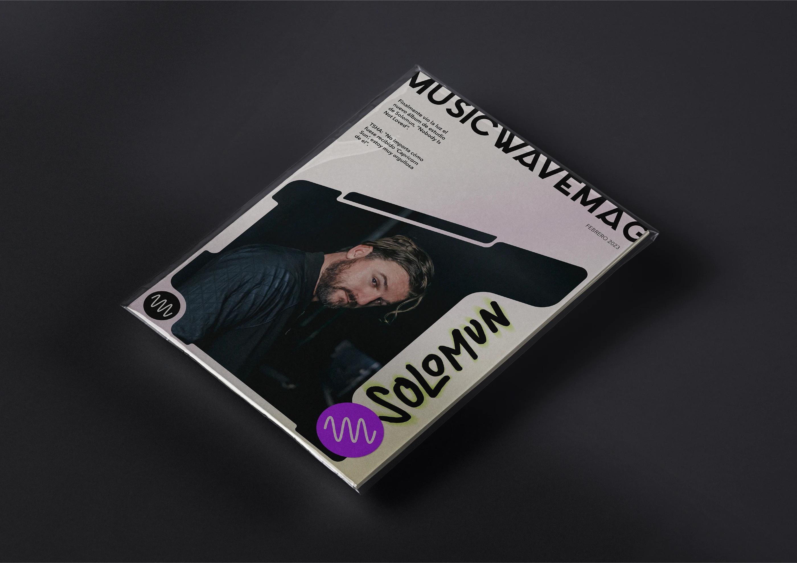

Music Wave Mag
Descripción
El proyecto de Music Wave Mag tiene como objetivo principal mantener informado tanto a los músicos y productores como a los amantes del sector sobre las últimas novedades de la escena de la música electrónica.
En su revista se tratan temas de producción y composición musical, nuevos equipos, entrevistas con artístas del momento y sus últimos lanzamientos.
La misión principal de Music Wave Mag es inspirar a los productores y compositores de música electrónica trayendoles la información y los recursos necesarios para educar a los principiantes y experimentados ayudándoles a elevar su carrera musical.
La marca de Music Wave Mag se define con un tono moderno con toques futuristas, elegante, límpio y minimalista.
El concepto del logotipo nace de unir la forma de una onda senoidal con las iniciales de la revista “MWM”. En el ámbito de la producción musical, la onda senoidal representa el sonido más básico de todos.
Cliente
Año


